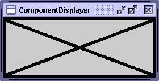
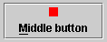
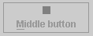
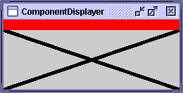

Feedback Form
|
|
Start of Tutorial > Start of Trail > Start of Lesson |
Search
Feedback Form |
1. What method defined by
JComponentpaints the inside of a component?2. Which of the following code snippets paint a rectangle (filled or not) that is 100x100 pixels?
a.
g.fillRect(x, y, 100, 100)
b.g.fillRect(x, y, 99, 99)
c.g.drawRect(x, y, 100, 100)
d. b and c
e. a and c3. What code would you use to make a component perform the next painting operation using the background color at 50% transparency?
1. Using a standard border and custom component painting, implement a component that has a preferred size of 250x100, is opaque by default, has a 5-pixel black border, and paints an “X” (using 5-pixel-thick lines) in the foreground color, as shown in the following figure.
2. Implement an icon that’s 10x10 pixels and paints a solid rectangle that fills the 10x10 area. If the icon’s component is enabled, the rectangle should be red; if disabled, gray. Make a copy of
ButtonDemo.javathat uses your customIconfor the middle button, instead of displayingmiddle.gif. The following pictures show what the icon should look like.
  3. Implement a border that paints a red 15-pixel-tall stripe all the way across the top of its component. Test this border by substituting it for the border on the component you created in exercise 1. The result should look like the following figure.


|
|
Start of Tutorial > Start of Trail > Start of Lesson |
Search
Feedback Form |
Copyright 1995-2004 Sun Microsystems, Inc. All rights reserved.